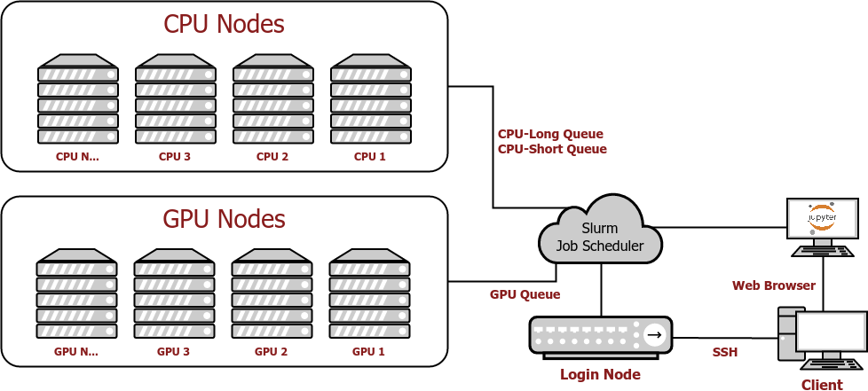

Introduction to Unity
This introductory tutorial will help you build an understanding of what an HPC, or high performance computing cluster is, and how to most effectively utilize it.
Defining some Terms
At its most basic level, you are learning how to use a cluster. A cluster is many servers (or computers) joined together in an effort to work together, where a single server is known as a node. Unity is an HPC, or High Performance Computing cluster. This means we focus most on computational power and efficiency, as the name entails. The primary use case of Unity is by researchers wanting more computational power than what is available on their own.
Think about your personal laptop/desktop: when you use your computer, the system decides the resources on your computer to use (cpu, ram, etc.) based on what you are doing at that time. When you scale this process up to a cluster, what is known as a scheduler determines what resources to give you, but this time across many computers, not just one. You can picture the cluster as a scaled-up version of a single personal computer. An operation you run on the cluster is referred to as a job.
How Unity Works
While you may not need to master every bit of the operation here at the Unity Cluster, it is important that you generally know how the cluster operates, because it can help your troubleshooting in the future. Below is a simplified diagram of the structure of Unity. The process in which you use the cluster: 1. The client connects to Unity using SSH, or the Jupyter portal. 1. Once connected, a job is requested through the scheduler, and your job is placed in the appropriate queue. 1. Once resources are available (cores, gpu, memory, etc.), the scheduler starts your job. 1. Once your job completes, the result returns to the client.
The above process can be viewed below:

1. Connecting to the cluster
You can connect to Unity in two ways, an SSH connection (the standard linux console), and an instance of JupyterLab. JupyterLab is the easiest to get up and going. When connecting the portal, you will be asked to select one of a few preset resources to allocate for your jupter notebook. Once you attempt to spawn your notebook and resources become available, you will be able to use JupyterLab as if it is running on your own computer.
SSH is the more traditional method of using an HPC cluster. You will connect to the login node of unity, and you will be responsible to starting your own jobs. This can be more useful than jupyter for jobs that last a long time that must be left unattended, or to have much more refined control over the resources allocated for your job.
Connecting the cluster is discussed in more detail here.
2. Requesting Resources
If you are on an SSH connection, you will have to manually request resources. Once you decide on what resources you want, you will submit that information to the scheduler, which will place you in a queue. If your resources are available immediately, your request will return right away, if not, you will be held in the queue until your requested resources become available.
Requesting resources in the cluster and all parameters allowed is discussed in more detail here.
3. Starting Job
Once the scheduler has started your job, it will run on some node in the cluster, using some resources that were defined by your parameters. It is not important what node the job runs on from the point of view of the client.
4. Ending Job
Once the job has finished, the scheduler will return whatever info you requested in your parameters.